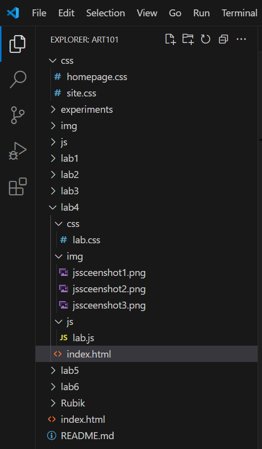
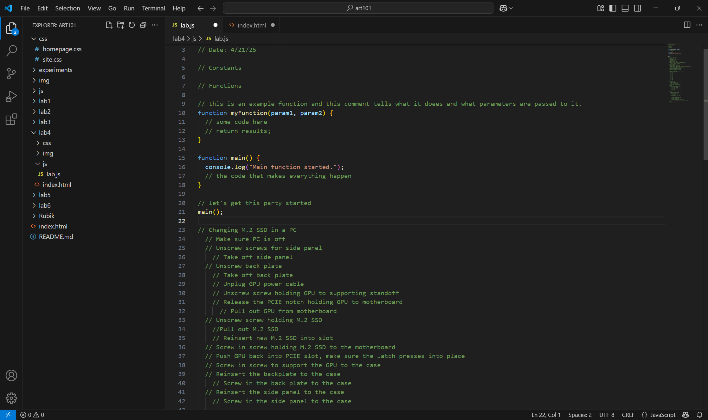
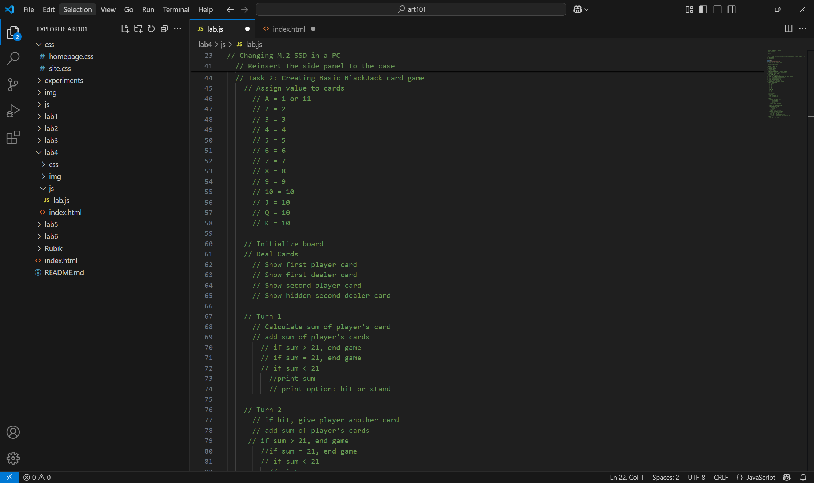
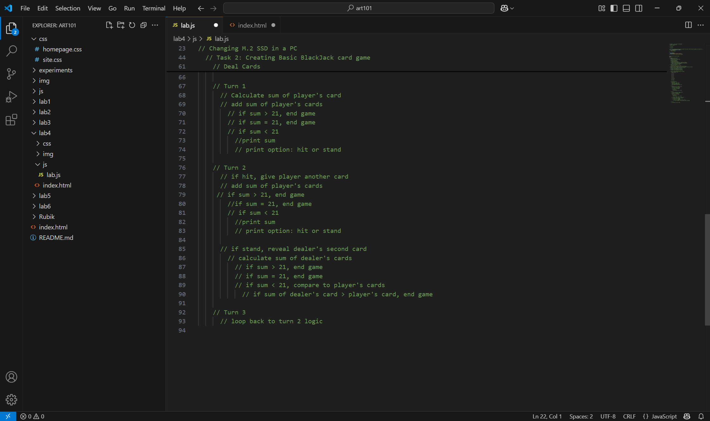

Lab 4 - Psueudocoding and Problem Solving
Challenge
Our challenge is to break down a task and turn it into pseudocode as a excercise and then integrate that pseudocode into our JavaScript file so it is organized, logical, and flows.
Problems
I didn't really have difficult problems, I was only confused about where to put things within our assignment.
Reflection
I think this assignment was valuable in understanding how we look at tasks and with a programming perspective, try to break down each task and step to something that the computer can process and understand.
Results
Screenshot of my File Structure
Screenshoot of pseudocode for Task 1: Changing an M.2 SSD in a PC
Screenshot of pseudocode for Task 2: Basic BlackJack
Screenshot of pseudocode for Task2: Basic Blackjack continued..
My pseudocode for Task 1: Changing a M.2 SSD in a PC and Task 2: Basic BlackJack
// Changing M.2 SSD in a PC
// Make sure PC is off
// Unscrew screws for side panel
// Take off side panel
// Unscrew back plate
// Take off back plate
// Unplug GPU power cable
// Unscrew screw holding GPU to supporting standoff
// Release the PCIE notch holding GPU to motherboard
// Pull out GPU from motherboard
// Unscrew screw holding M.2 SSD
//Pull out M.2 SSD
// Reinsert new M.2 SSD into slot
// Screw in screw holding M.2 SSD to the motherboard
// Push GPU back into PCIE slot, make sure the latch presses into place
// Screw in screw to support the GPU to the case
// Reinsert the backplate to the case
// Screw in the back plate to the case
// Reinsert the side panel to the case
// Screw in the side panel to the case
// Task 2: Creating Basic BlackJack card game
// Assign value to cards
// A = 1 or 11
// 2 = 2
// 3 = 3
// 4 = 4
// 5 = 5
// 6 = 6
// 7 = 7
// 8 = 8
// 9 = 9
// 10 = 10
// J = 10
// Q = 10
// K = 10
// Initialize board
// Deal Cards
// Show first player card
// Show first dealer card
// Show second player card
// Show hidden second dealer card
// Turn 1
// Calculate sum of player's card
// add sum of player's cards
// if sum > 21, end game
// if sum = 21, end game
// if sum < 21
//print sum
// print option: hit or stand
// Turn 2
// if hit, give player another card
// add sum of player's cards
// if sum > 21, end game
//if sum = 21, end game
// if sum < 21
//print sum
// print option: hit or stand
// if stand, reveal dealer's second card
// calculate sum of dealer's cards
// if sum > 21, end game
// if sum = 21, end game
// if sum < 21, compare to player's cards
// if sum of dealer's card > player's card, end game
// Turn 3
// loop back to turn 2 logic